Visual Chirality
|
Cornell University1
|
Cornell Tech2
|
CVPR 2020 Oral Video
Our full paper and code are also available! Please check out the links:
Teaser: Are these images flipped?
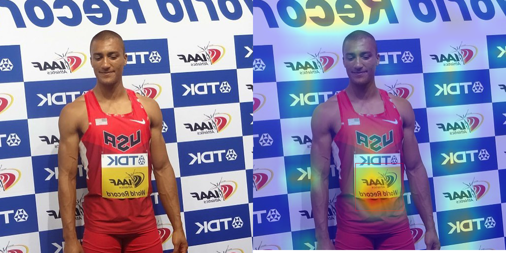
|
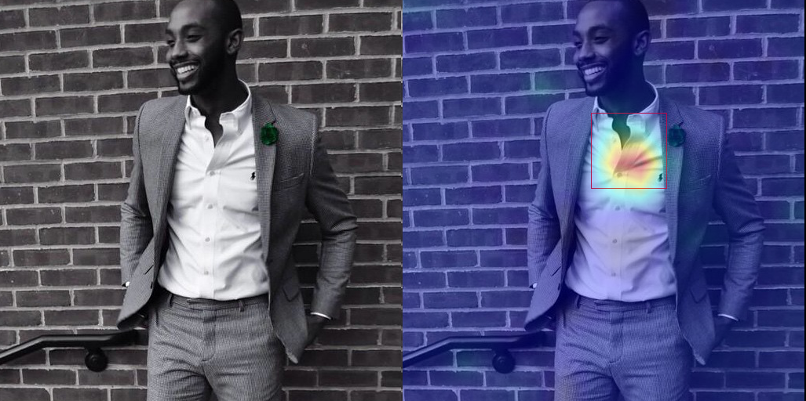
|
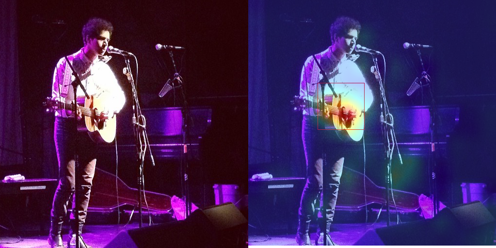
|
|
Is this image flipped? [Click it for answer!]
Yes!
[Text chirality] Text (in any language) is strongly chiral.
|
Is this image flipped? [Click it for answer!]
No!
[Object chirality] The shirt collar, and in particular which side the buttons are on, exhibit more subtle visual chirality.
|
Is this image flipped? [Click it for answer!]
Yes!
[Object interaction chirality] While guitars are often (nearly) symmetric, the way we hold them is not (the left hand is usually on the fretboard).
|
How can we tell whether an image has been mirrored? While we understand the geometry of mirror reflections very well, less has been said about how it affects distributions of imagery at scale, despite widespread use for data augmentation in computer vision. In this paper, we investigate how the statistics of visual data are changed by reflection. We refer to these changes as ''visual chirality'', after the concept of geometric chirality -- the notion of objects that are distinct from their mirror image. Our analysis of visual chirality reveals surprising results, including low-level chiral signals pervading imagery stemming from image processing in cameras, to the ability to discover visual chirality in images of people and faces. Our work has implications for data augmentation, self-supervised learning, and image forensics.
Examples of Visual Chirality
Below are examples of clusters of high level visual chirality cues we found by training on the Instagram dataset.
| Phones |
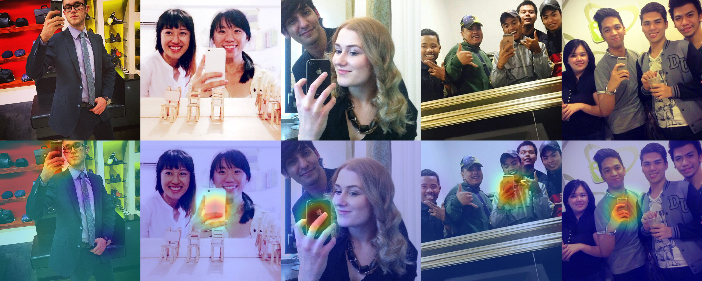
|
| Collars |
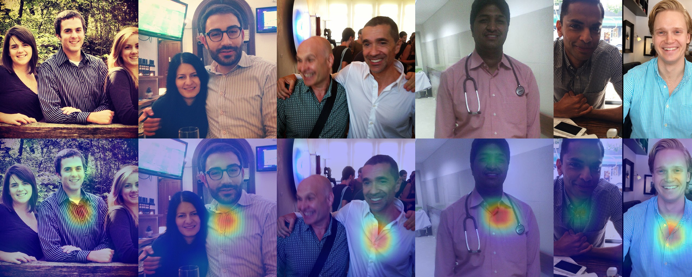
|
| Pockets |
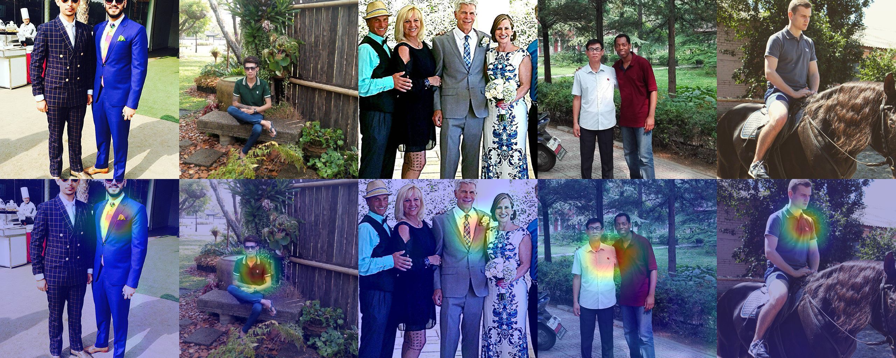
|
| Faces |
|
| Watches |
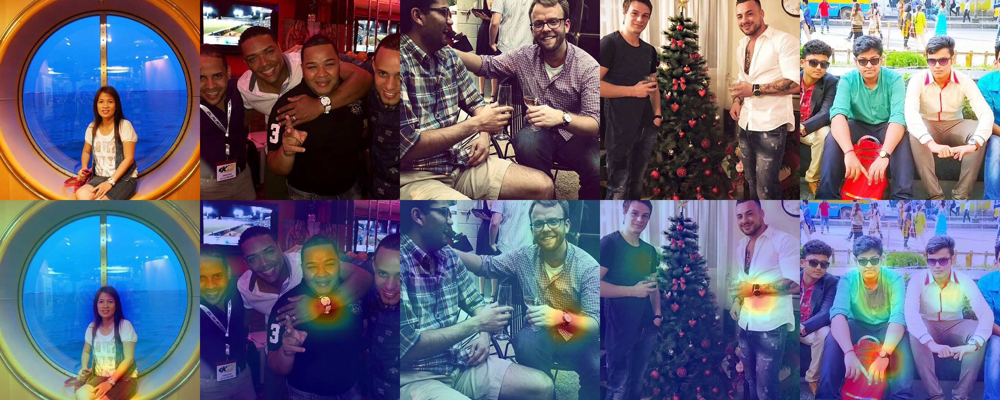
|
Chirality cues in human faces
By training on the Flickr-Faces-HQ dataset, we also discovered that human faces are especially chiral (i.e., a ResNet model trained to identify whether a random FFHQ face image has been flipped or not could achieve a test accuracy over 80%). Again, we clustered the chirality cues in human faces (as below), and we provide some analysis of these clusters in our paper.
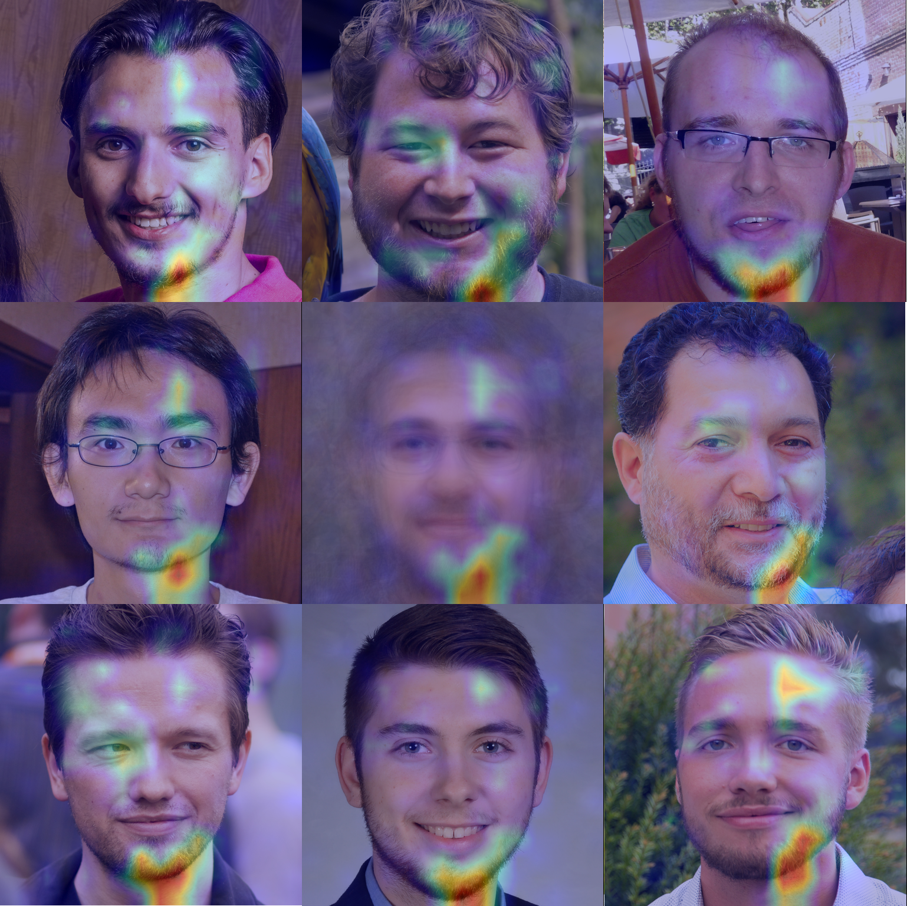
|
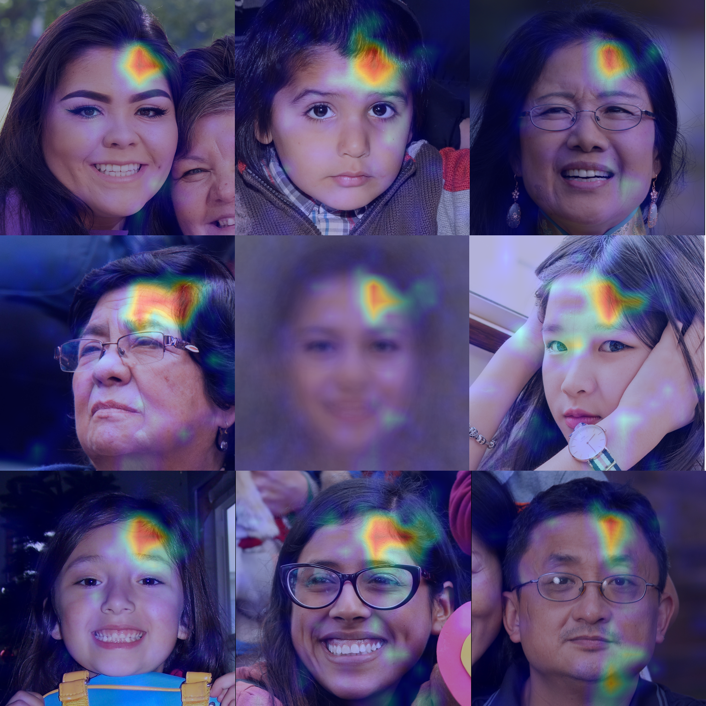
|
| Beard |
Hair Part |
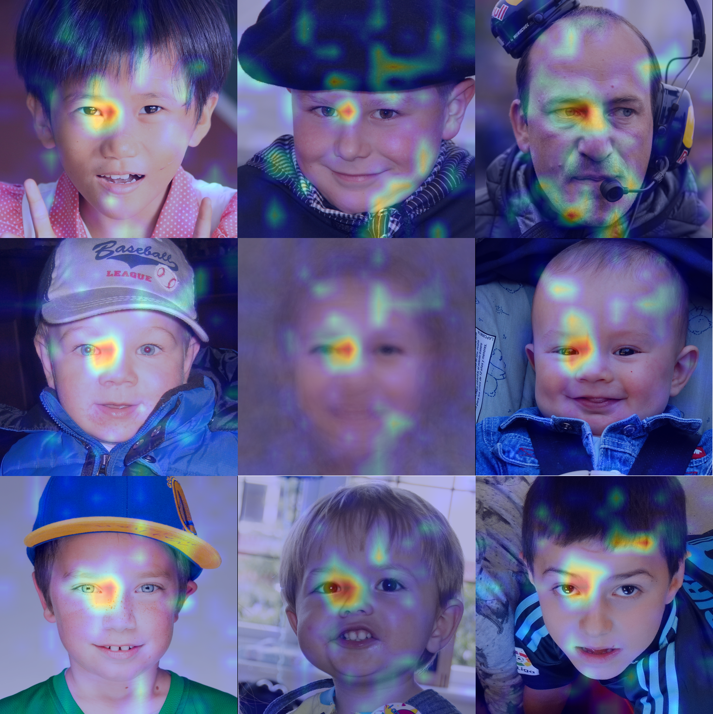
|
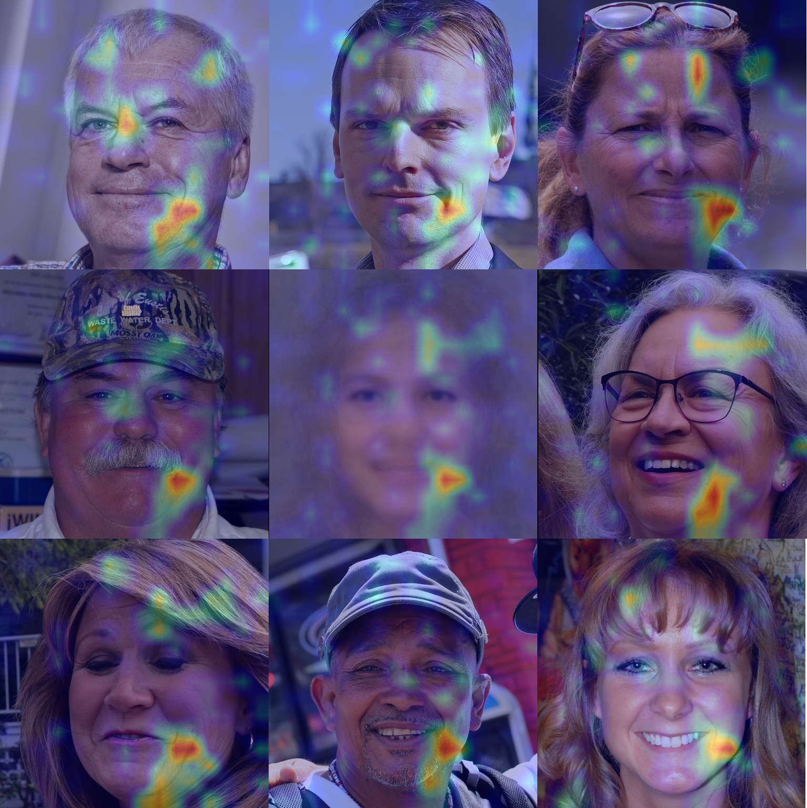
|
| Eye Gaze |
Dimple |
The Chirality of Image Processing
When we first attempted to train our model to distinguish between images and their reflections, we quickly observed that the network would find ways to accomplish this task using low-level cues that appeared only loosely correlated with the image content. Furthermore, the strength of these cues seemed to vary a great deal with changes in how data was prepared. In particular, we founded that the way we capture and process visual data -- even down to the level of Bayer mosaics in cameras or JPEG compression -- can have a significant impact on its chirality. In the supplemental material we develop theoretical tools based on a commutative test to help reason about that impact, and use this theory to predict what networks will learn in synthetic experiments. All the analysis, tests, and experiments are available in Python code (Check out our git repository).
| 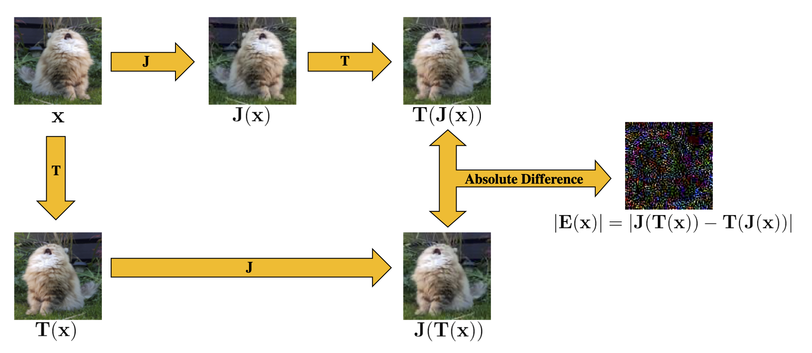 |
Paper
| 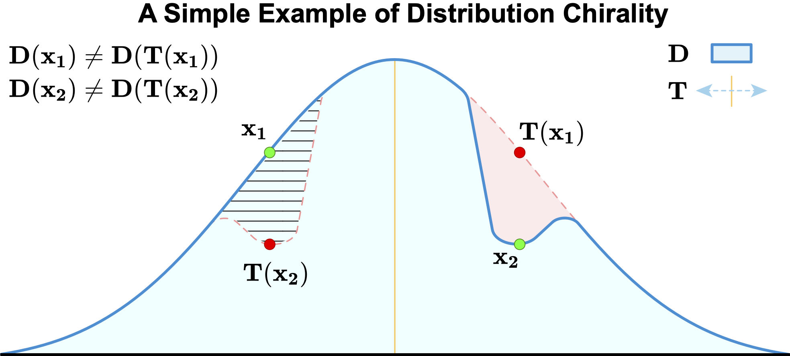 |
Zhiqiu Lin, Jin Sun, Abe Davis, and Noah Snavely.
Visual Chirality.
CVPR 2020 (Oral).
[Paper]
[Arxiv]
|
If you want to cite our papers, please use this Bibtex!
@InProceedings{chirality20,
title={Visual Chirality},
author = {Zhiqiu Lin and Jin Sun and Abe Davis and Noah Snavely},
booktitle={Computer Vision and Pattern Recognition (CVPR)},
year={2020}
}
Acknowledgements
This research was supported in part by the generosity of Eric and Wendy Schmidt by recommendation of the Schmidt Futures program.
|